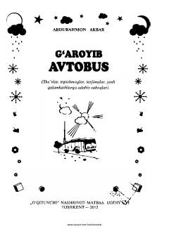

GABolalar uchun yozilgan quvnoq she'rlar, ertaklar va topishmoqlar to'plami.
Iste'dodli bolalar shoiri Abdurahmon Akbarning ushbu to'plamiga uning so'nggi yillarda yozgan quvnoq she'rlari, ertaklari va topishmoqlari jamlangan. Kitobda vatanparvarlik, ona tiliga muhabbat va bolalikning beg'ubor damlari sodda va tushunarli tilda tarannum etiladi.